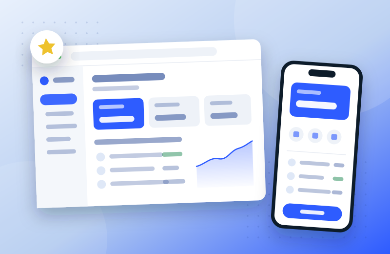

TBC Bank · Banking
Business Internet Bank redesign — winner of Global Finance's “Best Online Portal” 2021

The problem
TBC's Business Internet Bank carried the full set of operations a company needs to run its finances, but years of feature growth had buried them under navigation that no longer matched how businesses actually worked. Usage data and known pain points showed users struggling to find core operations and spending too long on routine tasks. The brief wasn't a facelift — it was to prove, with evidence, whether a full redesign was justified, then deliver it.
My role
I led the redesign end-to-end with product, business, and engineering — from the evidence-gathering that justified it to the shipped platform. I'd started at TBC as a UX Designer, where I built the design-system foundation this redesign later extended.
The work — decisions that mattered
Diagnose before redesigning
I ran tree testing against the existing navigation to isolate exactly where the information architecture broke down — so the rebuild stood on evidence, not internal assumptions about where features “should” live.
An IA organized by how businesses operate
I rearchitected the information architecture and core flows around real task paths, trading the legacy menu for a structure that cut time-on-task on the highest-frequency operations.
A platform, not a screen set
New features and enhanced flows were built on shared, reusable patterns — extending the design-system foundation so the experience stayed consistent as the product grew.
Also part of the work
- Started from quantitative data, business goals, and the documented problem set — arguing a structural redesign, not incremental patching, was the right investment.
- Established a repeatable research-based design process, tracked with Google's HEART framework against NPS, time-on-task, and conversion.
Outcome
The redesigned platform earned TBC the “Best Online Portal” category in Global Finance's World's Best Corporate/Institutional Digital Banks Awards 2021 — recognition leadership tied directly to the business internet bank. The same research-led approach carried across TBC's digital estate: Business Mobile Bank NPS from 55 to 64, a corporate intranet redesign (+20% engagement), a website IA change (−7% drop-off), and loan/savings calculators (+12% lead conversion).
Information architecture · tree testing · UX research · measurement (HEART) · design systems · interaction design · stakeholder alignment
Looking back
With more time I'd have instrumented navigation analytics from day one — tree testing found the breakages, but continuous funnel data would have caught them sooner.
Let's talk
Open to senior product-design roles across Poland — hybrid or remote, B2B or employment contract.